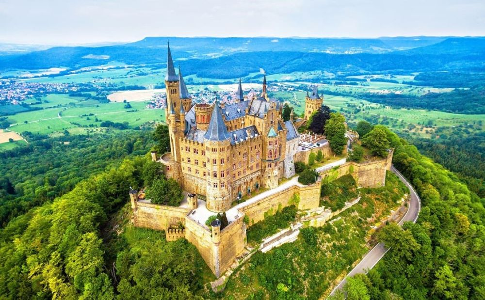

Descoperă Stuttgart - O incursiune în capitala landului Baden-Württemberg
Stuttgart este capitala landului Baden-Württemberg din Germania, oferind o gamă variată de atracții pentru vizitatori:
-

Palatul - Eleganță regală
Palatul Nou din Stuttgart este un exemplu impresionant de arhitectură barocă și găzduiește muzee și expoziții.
-

Turnul de televiziune - Vedere panoramică
Acest turn iconic oferă o panoramă uimitoare asupra orașului și regiunii înconjurătoare.
-

Muzeul Porsche - Pas cu pas prin istoria automobilelor
Amatorii de mașini vor aprecia această colecție de automobile Porsche și povestea brandului.
-

Grădina zoologică Wilhelma - Întâlnire cu natura
O combinație unică între grădină zoologică și grădină botanică, oferind o experiență captivantă.
-

Piața centrală - Pulsul orașului
Piața oferă o varietate de evenimente, târguri și este un loc perfect pentru a simți viața locală.
Concluzii
Stuttgart combină tradiția cu modernitatea, oferind o gamă bogată de atracții și experiențe pentru toți vizitatorii.